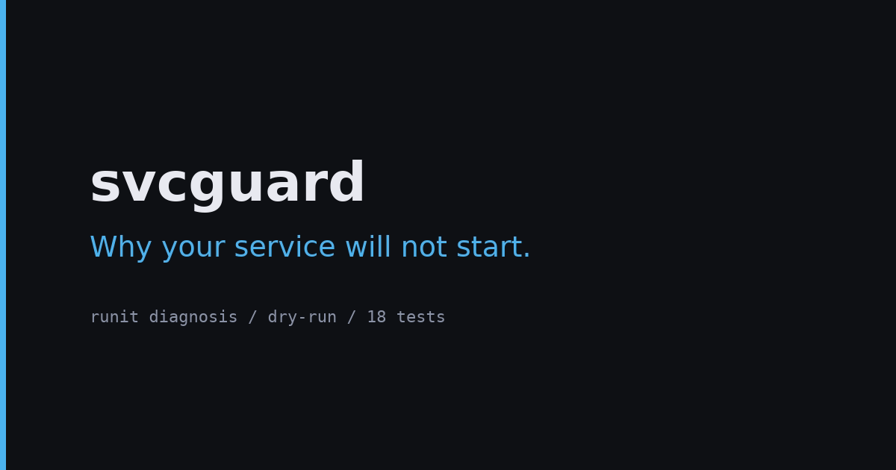

svcguard
$15 $9
A supervisor that tells you why your service will not start.
When runsv dies badly it leaves supervise/lock behind,
and every restart after that fails with unable to open supervise/ok —
a message that explains nothing. Meanwhile the dead service's children are
reparented to PID 1 and quietly burn CPU.
- Detects stale locks, dead supervise pids, missing or non-executable run scripts, and orphans
ensurestarts supervisors;reapterminates orphans- Dry-run by default — refuses to touch a lock a live supervisor owns
--jsonoutput for cron and monitoring- 18 tests, including the false-positive case